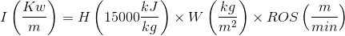
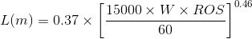
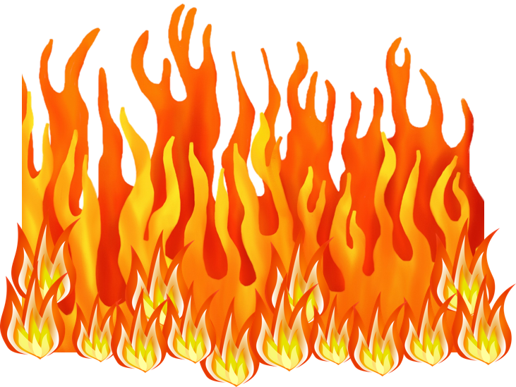
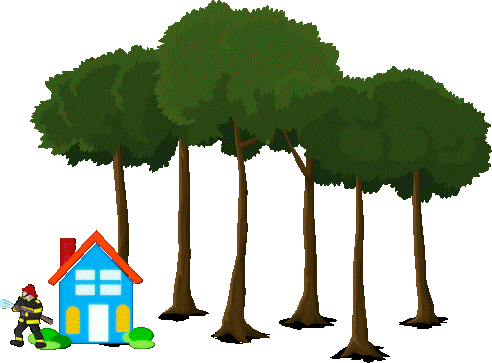

Tamaño de la llama en incendios forestales
El tamaño de la llama en un incendio forestal puede ser calculado a partir de la velocidad de propagación, la cantidad de material y sus características según la fórmula:


Conocemos algunos valores estándares de características de los materiales para distintos tipos de vegetación:
| Vegetación | Biomasa (por m2) |
|---|---|
| Pasto | 0.1 kg |
| Matorral bajo | 0.8 kg |
| Matorral alto | 3.5 kg |
Nos encontramos ante un incendio de pasto matorral bajo matorral alto que se mueve a una velocidad de m/min .
El valor de longitud de la llama esperado es m.

